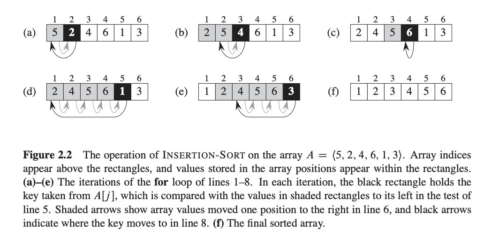

Sorting Algorithms
Insertion Sort

INSERTION-SORT(A)
for j = 2 to A.length
key = A[j]
//Insert A[j] into the sorted sequence A[1...j-1]
i = j - 1
while i > 0 and A[i] > key
A[i + 1] = A[i]
i = i - 1
A[i + 1] = key
Bubble Sort
void bubbleSort(int arr[], int n)
{
int i, j;
for (i = 0; i < n-1; i++)
// Last i elements are already in place
for (j = 0; j < n-i-1; j++)
if (arr[j] > arr[j+1])
swap(&arr[j], &arr[j+1]);
}
Selection Sort
The selection sort algorithm sorts an array by repeatedly finding the minimum element (considering ascending order) from unsorted part and putting it at the beginning. The algorithm maintains two subarrays in a given array.
1) The subarray which is already sorted.
2) Remaining subarray which is unsorted.
In every iteration of selection sort, the minimum element (considering ascending order) from the unsorted subarray is picked and moved to the sorted subarray.
void selectionSort(int arr[], int n)
{
int i, j, min_idx;
// One by one move boundary of unsorted subarray
for (i = 0; i < n-1; i++)
{
// Find the minimum element in unsorted array
min_idx = i;
for (j = i+1; j < n; j++)
if (arr[j] < arr[min_idx])
min_idx = j;
// Swap the found minimum element with the first element
swap(&arr[min_idx], &arr[i]);
}
}
Quick Sort
Difference between normal quick sort and randomized quick sort is that there will be a random number in low-high range and instead of directly using high as pivot index, we will first swap elements and random and high index and then use high as pivot index.
start as pivot : https://www.youtube.com/watch?v=cnzIChso3cc
#include<iostream>
#include<cstdlib>
using namespace std;
// Swapping two values.
void swap(int *a, int *b)
{
int temp;
temp = *a;
*a = *b;
*b = temp;
}
// Partitioning the array on the basis of values at high as pivot value.
int Partition(int a[], int low, int high)
{
int pivot, i, j;
i = low;
j = low;
pivot = high;
// Getting index of pivot.
for(; j < high; j++)
{
if(a[j] < a[pivot])
{
swap(&a[j], &a[i]);
i++;
}
}
// Swapping value at high and at the index obtained.
swap(&a[pivot], &a[i]);
return i;
}
// Random selection of pivot.
int RandomPivotPartition(int a[], int low, int high)
{
int pvt, n, temp;
n = rand();
// Randomizing the pivot value in the given subpart of array.
pvt = low + n%(high-low+1);
// Swapping pvt value from high, so pvt value will be taken as pivot while partitioning.
swap(&a[high], &a[pvt]);
return Partition(a, low, high);
}
// Implementing QuickSort algorithm.
int QuickSort(int a[], int low, int high)
{
int pindex;
if(low < high)
{
// Partitioning array using randomized pivot.
pindex = RandomPivotPartition(a, low, high);
// Recursively implementing QuickSort.
QuickSort(a, low, pindex-1);
QuickSort(a, pindex+1, high);
}
return 0;
}
Merge Sort
void merge(int A[ ] , int start, int mid, int end) {
//stores the starting position of both parts in temporary variables.
int p = start ,q = mid+1;
int Arr[end-start+1] , k=0; //Arr is temporary array
for(int i = start; i <= end; i++) {
//copying remaining elements
if(p > mid) //checks if first part comes to an end or not .
Arr[ k++ ] = A[ q++] ;
else if ( q > end) //checks if second part comes to an end or not
Arr[ k++ ] = A[ p++ ];
//actual merging
else if( A[ p ] < A[ q ]) //checks which part has smaller element.
Arr[ k++ ] = A[ p++ ];
else
Arr[ k++ ] = A[ q++];
}
for (int p=0 ; p< k ;p ++) {
/* Now the real array has elements in sorted manner including both
parts.*/
A[ start++ ] = Arr[ p ] ;
}
}
void merge_sort (int A[ ] , int start , int end )
{
if( start < end ) {
int mid = (start + end ) / 2 ; // defines the current array in 2 parts .
merge_sort (A, start , mid ) ; // sort the 1st part of array .
merge_sort (A,mid+1 , end ) ; // sort the 2nd part of array.
// merge the both parts by comparing elements of both the parts.
merge(A,start , mid , end );
}
}
Heap Sort
Watch this : https://www.youtube.com/watch?v=MtQL_ll5KhQ
left = 2 * i + 1
right = 2 * i + 2
1. make input as max heap
2. Start taking out max i.e. arr[0] by swapping with last element of unsorted part
3. max heapify for arr[0]
// C++ program for implementation of Heap Sort
#include <iostream>
using namespace std;
// To heapify a subtree rooted with node i which is
// an index in arr[]. n is size of heap
void heapify(int arr[], int n, int i)
{
int largest = i; // Initialize largest as root
int l = 2 * i + 1; // left = 2*i + 1
int r = 2 * i + 2; // right = 2*i + 2
// If left child is larger than root
if (l < n && arr[l] > arr[largest])
largest = l;
// If right child is larger than largest so far
if (r < n && arr[r] > arr[largest])
largest = r;
// If largest is not root
if (largest != i) {
swap(arr[i], arr[largest]);
// Recursively heapify the affected sub-tree
heapify(arr, n, largest);
}
}
// main function to do heap sort
void heapSort(int arr[], int n)
{
// Build heap (rearrange array)
for (int i = n / 2 - 1; i >= 0; i--)
heapify(arr, n, i);
// One by one extract an element from heap
for (int i = n - 1; i > 0; i--) {
// Move current root to end
swap(arr[0], arr[i]);
// call max heapify on the reduced heap
heapify(arr, i, 0);
}
}
/* A utility function to print array of size n */
void printArray(int arr[], int n)
{
for (int i = 0; i < n; ++i)
cout << arr[i] << " ";
cout << "\n";
}